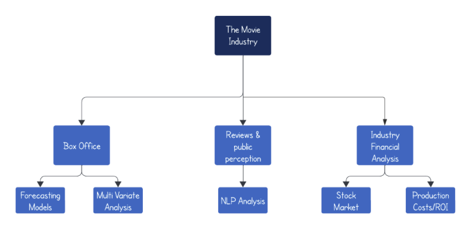

Introduction
If we go back in history, we can clearly see that as a species we have always been known to be story tellers, whether it is drawing our stories on cave walls or telling our stories around a campfire; the stories we tell have always been a representation of who we are, where we come from, and who we want to be. Movies happen to be the most advanced type of storytelling, and they answer all these questions using creativity. My very first childhood memory I have with my father is when he took me to watch the first “Iron Man” back in 2008, and ever since that moment, I have become a movie addict.
Fueled by my deep passion for the film industry, I have chosen to apply the time series analysis skills I am acquiring in this course to gain a more comprehensive understanding of the industry. My goal is to analyze it rigorously from various technical perspectives and delve into the profound transformations that time has wrought upon the film industry.
In addition to being a passion project of mine, the film industry is one of the most numbers and data centric industries out there
This project aims to analyze the film industry from a variety of angles including:
* Box Office Analysis: This section entails a time series analysis of the box office performance of films throughout the years. It will also encompass forecasting methodologies.
* Reviews and Public Perception: A look at the evolution of public perception regarding films over time. This analysis will primarily include the examination of film reviews and social media sentiment analysis.
* Industry Financial Insights: This section will predominantly revolve around the in-depth analysis of the film industry’s financial aspects, including the performance of film studio stocks and production costs.

The range of topics to explore within each of the aforementioned sections/angles is extensive. However, for this project, I have chosen to address a selection of questions pertaining to each angle. These questions encompass:
- How has the overall box office evolved over the years?
- What markets, namely the US versus international, have commanded the largest share of box office revenues?
- Which film genres have been associated with the highest box office returns, and has this association changed over time?
- How has the streaming industry affect the Box Office of movies?
- Can Time Series models effectively forecast the US box office performance of a film?
- How has the sentiment of movie reviews shifted throughout the years?
- Has there consistently existed a disparity between audience scores and critic scores?
- Is it feasible for a time series model to predict the score of an upcoming movie?
- How have production costs and budgets fluctuated over the years?
- In what manner has the return on investment (ROI) of films changed over the years, and how does it correlate with a film’s success?
Each of the above questions and topics will be addressed via different sets of visualizations, statistical analysis, and time series models that will give different insights.
Data Sources
Below are the main data sources for the various analysis in this project
The Movie Database
The Movie Database (TMDB) is a prominent online platform dedicated to movies and television shows. It offers an expansive dataset encompassing movie details such as titles, release dates, genres, cast and crew information, user ratings, images, trailers, and more. TMDB also extends its coverage to TV shows, providing data on episodes and air dates.
Rotten Tomatoes
Rotten Tomatoes is a well-known review aggregator website that compiles critical and audience reviews for movies and television shows. It provides a dual-score system, featuring the Tomatometer score, which reflects the percentage of positive reviews from professional critics, and the Audience Score, based on user ratings and reviews. Rotten Tomatoes’ data is a valuable resource for assessing the dynamic relationship between critic and audience perspectives within the realm of entertainment.
IMDB
IMDb, short for the Internet Movie Database, is a renowned online platform that offers an extensive database of films, television series, and related content. It provides comprehensive information about movies, including details about cast and crew, plot summaries, release dates, and user-generated reviews and ratings.
Data Visualizations
Weekend Box Office (1977-2023)
A notable and broad observation is the evolution of weekend box office results from 1977 to 2023. The initial and unmistakable trend is the nearly exponential growth in weekly box office earnings over time. In the past, weekend box office earnings were typically in the range of a couple of million dollars, whereas nowadays, they often reach into the tens or even hundreds of millions.
These results are in line with the significant expansion of the movie industry over the last few decades. Ticket prices have risen in response to inflation, and movies have become a much more substantial and influential part of popular culture as time has progressed.
Regarding seasonality and cyclic patterns, it appears that there are consistent recurring cycles throughout this time period, although a more detailed analysis of these patterns will be conducted in the EDA (Exploratory Data Analysis) section. Additionally, there seems to be a continuous increase in the difference between the lowest and highest points, and this gap appears to be widening as time goes on.
Weekend Box Office Winners per Genre
One of the most obvious facts is that certain types of movies consistently outperform others at the box office. For instance, franchise movies, such as superhero films, have consistently demonstrated stronger performance compared to other genres. Remarkably, when we examine the top 10 highest-grossing movies of all time, only one, "Titanic," does not belong to a major intellectual property or franchise. Therefore, it is sensible to analyze the top box office performers within different genres over time.
The animated plot presented above illustrates the genres that have dominated the box office each year. Surprisingly, the number of films winning the weekend box office in various genres varies widely from year to year. Genres like Action and Drama often cover the majority of box office winners. However, this pattern can be explained by the infrequent release of big franchise movies. Producing such films entails significant costs and time, resulting in less frequent releases. Conversely, there is a consistent influx of drama and low-budget movies being released every week, contributing to a more diverse distribution of box office results across genres.
Rotten Tomatoes Scores of Top Box Office Earners
Another layer of analysis worth exploring is whether critically acclaimed movies tend to top the box office or not. To investigate this, the plot above utilizes data from Rotten Tomatoes, the most widely recognized platform for aggregating critic movie reviews. On Rotten Tomatoes, movies are categorized as either "Fresh" or "Rotten." "Fresh" signifies movies with ratings above 60%, indicating that 60% or more of critics gave the film a positive review, while the rest are considered "Rotten."
Examining the distribution of movies in these two categories is quite intriguing. It reveals an almost even split, with roughly half of the movies classified as "Fresh" and the other half as "Rotten." This suggests that there isn't an overwhelming reliance on a movie's critical reception for its opening weekend success. However, the story may differ when considering a movie's long-term box office performance, as a film is less likely to have staying power if it doesn't receive positive reviews from critics.
This observation could be a subtle indication that factors like hype and marketing might exert a more significant influence on a movie's opening weekend performance compared to critic ratings. For instance, franchises like "Fast & Furious" consistently perform well in their opening weekends despite not always receiving favorable critical acclaim.
Studio Financial Analysis
This analysis delves into the financial sector of the movie industry, specifically highlighting stock performances of major Hollywood studios. Our focus is on Disney, Paramount, Lionsgate, Warner Bros, and Netflix. While there are numerous studios in the industry, these selected entities provide a comprehensive insight into the sector's financial landscape. Notably, we've included Netflix to represent the growing impact of streaming services in this traditionally cinema-focused industry.
A standout observation is Netflix's meteoric rise in stock prices. The growth trajectory of Netflix's stock, in many instances, has eclipsed the combined growth of some of the other studios. This surge underscores investors' confidence in Netflix's future potential. It suggests a broader industry trend where streaming platforms could challenge, if not dethrone, traditional movie theaters as the primary venues for film viewing. The rise of Netflix is not just a testament to its success as a streaming service but positions it as a formidable player in the entertainment sector, transcending its initial label as merely a tech company.
However, a nuanced view, especially when analyzing normalized stock prices, reveals a consistent growth story for Disney. Unlike the erratic stock performances of other studios, Disney's stock has shown steady growth. Curiously, despite Netflix's overwhelming growth in absolute terms, when assessed against normalized metrics, its behavior mirrors that of other major studios. A potential explanation could be the cyclical nature of the industry, marked by periods of hit releases and lulls, impacting all players uniformly over time.
On the cinematic front, Paramount historically dominated the charts, boasting the highest number of weekly box office toppers for an extended period. However, the tide seemed to turn in favor of Disney. This shift is unsurprising, given Disney's strategic acquisitions over the years. Their portfolio now includes powerhouses like Marvel, Lucasfilm, and Pixar. The consistent release of blockbuster titles from these franchises has cemented Disney's position at the pinnacle of box office charts.
In summary, while streaming giants like Netflix are making waves in the stock market, traditional studios, especially Disney, with its strategic acquisitions and diverse portfolio, continue to hold their ground, both in stock performance and cinematic dominance.
Movie Budget vs Box Office Analysis
The scatter plot vividly captures the relationship between a movie's budget and its opening weekend gross for films that clinched the top spot during their debut weekends from 1977 to 2023.
A clear trend emerges upon examination, pointing to a significant correlation between higher movie budgets and greater opening weekend gross. With a correlation coefficient of approximately 60%, the data suggests that as film budgets increased, there was a correspondingly substantial increase in their opening weekend revenue. This trend underscores the potential influence of hefty investment in movie production, which likely translated into enhanced marketing campaigns, star-studded casts, and higher production quality — all pivotal elements driving audiences to theaters during the movie's debut weekend. The plot reinforces the notion that, over the span of these years, putting more financial resources behind a film often yielded higher returns during the crucial opening weekend.
Studio Production Budgets
The graph provides an insightful visualization of the average production budgets of different studios, focusing on films that dominated their opening weekends between 1977 and 2023.
A few prominent observations can be drawn from the data presented. First, the overall production budgets of weekend-winning movies have seen a consistent uptrend, with a pronounced acceleration in recent years. This may reflect the intensifying competition among studios and the ever-rising costs of filmmaking.
Notably, Disney's production budgets showcase an intriguing trajectory. Starting with relatively moderate spending, the studio sharply increased its investments around the early 2010s. This surge might coincide with their strategic acquisitions and the launch of blockbuster franchises, emphasizing their aggressive approach to capture box office dominance.
Sony, on the other hand, maintained a relatively steady budget allocation over the years, with a few fluctuations but without any dramatic spikes. This could suggest a consistent strategy in their filmmaking approach.
The category labeled "Other" has also seen a consistent increase, especially in the latter part of the timeline, suggesting that even outside the major studio giants, there's a significant investment in producing potential box office hits.
In essence, the landscape of movie production has undergone significant transformation over these decades, with studios, especially giants like Disney, pumping in more funds than ever to ensure their movies aren't just hits, but weekend-winning sensations.
Exploratory Data Analysis
Lag Plots
The graph above depicts a series of lag plots for the "Opening Weekend Box Office" data. Lag plots are scatter plots of a time series against a lag of itself, and they provide a useful graphical representation of whether a dataset (or time series) is random or not. A dataset is considered random if the points in the lag plot are randomly scattered around the horizontal axis, without any discernible pattern. In contrast, if there's a structure in the lag plot, the dataset can be considered to exhibit some form of serial correlation.
In this particular visualization, four lag plots are shown, corresponding to lags of 1, 15, 30, and 52 (weeks). For the lag 1 plot, there's a clear linear trend, indicating strong serial correlation from one data point to the next. This suggests that the box office data of a particular weekend is closely related to the previous weekend's data. As the lag value increases (15, 30, and 52), the structure in the plots starts to diminish. While there's still some correlation at lag 15, it becomes weaker at lags 30 and 52. This implies that the immediate past (a few weeks prior) has a more significant impact on current weekend box office performance than the more distant past.
The implications for time series modeling here are multifaceted. First, since there's a noticeable correlation at lag 1, autoregressive (AR) terms would be significant in an ARIMA model. Given the diminishing correlation in higher lags, differencing the series might be beneficial to make it stationary, which is often a prerequisite for ARIMA modeling. Additionally, the weakening correlations as the lag increases suggest that recent historical data will have more predictive power than older data. This insight can guide feature engineering for machine learning-based approaches, where recent past values might be given higher importance. Lastly, considering the temporal patterns, special events, movie releases, or holidays might be driving specific peaks or troughs in the box office data, and integrating such external factors into the model might enhance its predictive accuracy.
Decomposition Plot
Figure 2 displayed represents the decomposition of a multiplicative time series into its individual components: data, trend, seasonal, and remainder. Time series decomposition is a statistical method used to deconstruct a time series into these components, making it easier to identify patterns and irregularities.
- Data: The topmost panel displays the raw time series data. We observe fluctuations and variability, which makes it challenging to discern a clear pattern or trend merely by looking at this raw data. The values range between near 0M to roughly 400M, showcasing the volatility and potential seasonality in the data.
- Trend: The second panel presents the trend component of the data. The trend represents the underlying movement in the series, disregarding the noise or short-term fluctuations. In this case, there’s a slight upward trend, indicating an increase in the data’s values over time. There are also noticeable fluctuations in the trend, suggesting that while the general direction might be upward, there are periods of decline and rise.
- Seasonal: The third panel showcases the seasonal component. In time series analysis, seasonality refers to periodic fluctuations. For instance, sales might be consistently high during Christmas or summer every year. The black bars indicate a strong and consistent seasonal pattern. The repetition at fixed intervals underscores the presence of a well-defined seasonality in the data. Another reason for this very “all over the place” behavior in seasonality is the fact that there are thousands of weeks (over 40 years worth of data). A sample version (only for a year) will be conducted under this section to analyze seasonality at a more granular level.
- Remainder (or Residual): The bottom panel represents the residuals or the remainder of the data once the trend and seasonality have been extracted. It essentially captures the noise or the unpredictability in the data. Observing this plot, there are sporadic spikes, suggesting that while most of the data’s behavior can be explained by its trend and seasonality, there are still some unexplained or unexpected fluctuations.
Overall this particular time series exhibits a clear seasonality, a slightly upward trend, and sporadic unexpected fluctuations. Recognizing these components is beneficial for businesses or analysts as they can plan and strategize based on the predictable pattern (trend and seasonality) and also allocate resources to investigate the cause of any anomalies or unexpected fluctuations (residuals).
Sampled Decomposition Plot
Figure 3 is the same exact analysis done in Figure 2 but only for one year worth of data, with the intent of reducing the data points we are analyzing to have a clearer view at the seasonality of our data. The figure illustrates distinct cyclical variations in weekly box office returns throughout 2020. These oscillations appear to be periodic, suggesting that certain weeks consistently witnessed higher or lower box office returns.
The regularity of these oscillations might be linked to various factors specific to the film industry. For instance, certain times of the year, such as holiday seasons, school vacations, or periods associated with major film releases, could see heightened box office activity. Conversely, periods with no major releases or outside of vacation times might register lower returns. The consistent peaks and troughs indicate that there are predictable times in the year when movies are either raking in higher ticket sales or experiencing a slump.
The magnitude of the seasonal component’s oscillations seems relatively consistent across the time series, suggesting that while the exact figures might change, the pattern of highs and lows remained steady throughout the year.
For film industry stakeholders, such a pronounced seasonal pattern is invaluable. Distributors, production houses, and theater chains can leverage this data to strategically time their film releases, marketing pushes, or even theater maintenance downtimes.
Moving Average

Figure 4 presents a comparative analysis of the moving averages for the weekend box office data across different windows of time. Each subplot offers a distinct moving average, computed over periods of 5, 25, 52, and 100 days, respectively.
At first glance, the ma_5 (red line) captures the short-term fluctuations of the box office performance with high fidelity. It is closely aligned with the raw data, highlighting the immediate ups and downs of weekend revenues. Such a short window moving average is typically sensitive to sudden changes, making it ideal for detecting rapid shifts in data. However, this can also mean that it’s more prone to noise, which might not always be indicative of an overarching trend.
In contrast, the ma_100 (purple line) provides a smoother, longer-term perspective on box office performance. This curve abstracts away short-term volatility, offering a more consolidated view that emphasizes the broader trajectory of revenues over the given period. Such a depiction is instrumental in understanding overarching trends, seasonality, and potential cyclic behaviors.
The ma_25 (blue line) and ma_52 (green line) offer intermediate perspectives, balancing between capturing immediate changes and identifying longer-term patterns. Notably, the ma_52, representing a year’s worth of weeks, gives insights into annual seasonality, highlighting periods of consistently high or low revenues.
In the realm of the film industry, such moving averages serve pivotal roles. For instance, the ma_5 can inform immediate reactions, such as marketing boosts or schedule changes, in response to sudden shifts in viewer interest. Longer-term averages, like ma_100, can aid in strategic planning, providing insights into best times for big-budget releases or anticipating annual slumps. When combined, these moving averages offer a comprehensive overview, allowing stakeholders to make informed decisions, whether they’re looking to address immediate concerns or strategize for the future.
ACF
Figure 5 showcases the autocorrelation function (ACF) for the weekend box office data. Autocorrelation measures how a series is correlated with its past values. Essentially, it provides insights into the relationship between an observation and a lagged version of itself over successive time intervals. The “Lag” on the x-axis indicates the number of time periods separating the two sets of values being compared.
At the very beginning (lag 0), the autocorrelation is 1, as any dataset is perfectly correlated with itself. As we move to the right, the chart depicts how the box office performance is related to its past values over weekly lags. The fact that the values remain relatively high for the initial lags and gradually taper off indicates that the box office data for a particular weekend is somewhat influenced by the recent past weekends. This could imply that the performance of movies tends to have momentum—either carrying forward strong or weak performances from the previous weeks.
The blue dashed lines indicate the significance threshold. Correlations lying outside these lines are statistically significant, meaning they are likely not a result of random fluctuations. Notably, many lags have bars surpassing this threshold, especially in the initial phase, signifying meaningful autocorrelation. This suggests that a significant amount of the variability in the box office data can be predicted from its past values.
For the film industry, understanding this autocorrelation is valuable. If recent weeks’ box office performances have a strong influence on subsequent weeks, then marketers, distributors, and theatre owners can strategize accordingly. For instance, if a particular genre or a movie is performing exceptionally well in consecutive weeks, it might be beneficial to prolong its screening, capitalize on marketing momentum, or release similarly themed movies. Conversely, if a film starts to underperform, stakeholders might consider changing strategies swiftly, considering the influence of recent data on the immediate future.
PACF
On the other hand, Figure 6 us displays the partial autocorrelation function (PACF) for weekend box office data. PACF is a crucial diagnostic tool in time series analysis, specifically used to ascertain the relationship between an observation and its lag, after removing the effects of intermediate lags. In simpler terms, while ACF measures raw correlations, PACF measures correlations after accounting for any shared correlations with the intermediate time steps.
Observing the chart, the y-axis denotes the partial autocorrelation value and the x-axis indicates the number of lags. The bar at lag 0 is always 1 since an observation is always perfectly correlated with itself. The subsequent bars provide the partial autocorrelation for each lag. Notably, the majority of the lags appear to have bars that fall within the blue dashed lines, which depict the significance threshold. PACF values within these boundaries are generally considered not statistically significant, implying they could arise from random variations.
In the context of the box office data, a few specific lags have partial autocorrelations that surpass the significance thresholds, particularly in the initial lags. This suggests that, while there’s some predictability in the data based on very recent past weekends, the influence of more distant past weekends is less clear, after accounting for more recent data.
ADF Test
The Augmented Dickey-Fuller (ADF) test is a statistical test commonly used to test whether a time series has a unit root, i.e., it is non-stationary. A unit root suggests that the series might exhibit a systematic pattern over time, which can be a problem in many statistical modeling techniques. Ideally, for modeling purposes (like ARIMA), it’s often desired that time series data be stationary, meaning its properties do not depend on the time at which the series is observed.
Running the data on my data, i got a value of -6.8219, strongly negating the null hypothesis of a unit root, which implies stationarity. This is further bolstered by the p-value of 0.01, which is a robust evidence against the series having a unit root, suggesting the acf series’ stationarity.
Given this, the alternative hypothesis, which posits that the data is stationary, is preferred. Essentially, the ADF test result signals that your acf series is stationary, implying that differencing might be unnecessary for removing non-stationary patterns.
ARIMA Modelling
Introduction
ARIMA, which stands for Autoregressive Integrated Moving Average, is a class of time series models that combines autoregressive (AR) and moving average (MA) models with differencing to render the time series stationary. In essence, ARIMA captures temporal structures and patterns within a dataset to make accurate future predictions. In the context of this problem, ARIMA models were used to predict the weekend box office (total of all movies). Below are the different components of this model and its results.
Fitting ARIMA
In ARIMA modeling, three fundamental parameters are of utmost importance: p, d, and q. The parameter 'p' denotes the order of the autoregressive (AR) term, which captures the relationship between an observation and a number of lagged observations. 'd' is the differencing order used to make the series stationary, primarily by removing trends or cycles. The 'q' parameter signifies the order of the moving average (MA) term, encapsulating the dependency between an observation and a residual error from a moving average model applied to lagged observations.
In the process of determining the optimal orders for these parameters, the ACF (Autocorrelation Function) and PACF (Partial Autocorrelation Function) plots are invaluable tools. The ACF plot, displaying a gentle decay, intimates the existence of an AR process. Given that there's no abrupt drop-off after any specific lag, this is an indication that our data might be better represented with an AR term. On the other hand, the PACF plot uncovers pronounced spikes at the first two lags, pointing towards two potential AR terms. Subsequent spikes, which lie within the confidence intervals, are typically not considered significant.
Consequently, based on these observations, the order of the AR term 'p' is likely set at 2, inferred from the significant lags seen in the PACF. As for the MA term's order 'q', it's not distinctly evident from the ACF, but the gentle decline suggests that either an MA term might not be pivotal or, if it is introduced, starting at q=1 would be sensible. With adjustments based on further model diagnostics, an initial ARIMA model with p=2 and a tentative q=1 is a sound starting point.
Note: PACF and ACF plots can be found in the EDA section above.
After starting with p=2 and q=1, i looped through differnet combinations of p and q, and compared various metrics like AIC and BIC to end up with ARIMA(3,1,2) as the final model
. The equation of the resulting fomrula looks like:
(1 - 0.9475*L + 0.2340*L^2 - 0.1044*L^3) * Delta(Y_t) = (1 + 1.4502*L - 0.4615*L^2) * epsilon_t
Model Diagnostics
Just like in Machine learning, all time series model should be evaluated on the basis of their metrics and residuals. The four different residual analysis
tests include:
1. Standardaized residual analysis
2. Residual ACF analysis
3. Residual PACF analysis
4. Residuals histogram
5. Residuals QQ-plot.
Volatility Clustering: A striking characteristic in the residuals is the evident volatility clustering. This pattern, wherein stretches of high variability are succeeded by comparable periods and vice versa for low variability, hints at potential external factors or events leading to pronounced spikes or dips in box office figures. Upon closer examination, it becomes apparent that the more significant model deviations align closely with the onset of the COVID-19 pandemic. This alignment is understandable since the pandemic significantly disrupted the market, and it would be unreasonable to expect any pre-existing model to have accounted for such an unprecedented event. A pragmatic approach might involve developing two distinct models: one for the pre-COVID era and another for the post-COVID landscape.
Consistency and Predictive Performance: The residuals seem to hover around the zero mark, implying that the model's predictions are, on average, quite close to the actual observations. However, the extent and frequency of the spikes indicate that while the model captures the general trend, there are specific weekends where the model's predictions deviate considerably from the actuals.
Implications for Box Office Predictions: The pattern observed in the residuals underscores the inherent unpredictability of weekend box office performances. While certain trends can be discerned and predicted, external factors such as film reviews, marketing campaigns, competition from other entertainment sources, or even broader economic and social dynamics can introduce significant variability. For future modeling approaches, it might be beneficial to incorporate additional exogenous variables or employ models that can better capture the volatility in the data, such as GARCH (Generalized Autoregressive Conditional Heteroskedasticity) models.
The Autocorrelation Function (ACF) plot of the residuals from a time series model reveals valuable insights into the adequacy of the model. The plot initially shows a strong autocorrelation at lag 0, as expected, but rapidly declines, with subsequent autocorrelations hovering close to zero and within significance bounds. This suggests that the model has effectively captured most of the data's structure, as there is no significant correlation between residuals from one period to the next. The random fluctuations in higher lags resemble white noise, indicating a well-fitted model. Additionally, the absence of significant peaks at regular intervals in the ACF plot implies that no seasonality is left in the residuals, affirming the model's success in capturing the data's underlying patterns. However, it's advisable to complement this analysis with other diagnostic tools and tests for white noise to form a comprehensive assessment of the model's performance.
The Partial Autocorrelation Function (PACF) plot of residuals provides important insights into the adequacy of a time series model. The blue dashed lines represent significance bounds, and PACF values within these bounds indicate that the corresponding lag's partial autocorrelation is not statistically significant. While the PACF plot reveals sparse significant lags, notably at lags 5, 25, and 30, it suggests that the residuals may be influenced by data points at these lags that the model hasn't fully captured. This could imply a need to explore additional autoregressive terms in an ARIMA model. However, the absence of a systematic pattern and the majority of PACF values hovering around zero, particularly for higher lags, are positive signs that the model has successfully captured most of the linear relationships in the data. To form a comprehensive assessment, it's advisable to complement this analysis with other diagnostic tools and checks to ensure the model's adequacy and validate the PACF plot's findings.
The distribution of residuals is centered around zero, suggesting that on average, the model does not consistently overpredict or underpredict. This is a positive sign of a well-fitted model. The bulk of the residuals seem to cluster in a relatively narrow range, with a few noticeable tails extending out, especially towards the right. The shape of the distribution appears to be slightly right-skewed, meaning there are a few instances where the model has notably underpredicted the actual values.
From the Q-Q plot above, the points closely follow the diagonal line for a considerable range, which suggests that the residuals have a distribution that is approximately normal for a significant portion. However, noticeable deviations are present at both tails, especially at the lower left and upper right. The lower tail's deviation suggests that there are more extreme values in the negative direction than what would be expected in a normal distribution. Similarly, the upper tail shows some curvature, suggesting that the residuals have some heavier tails or more extreme values than a standard normal distribution would exhibit. In summary, while the main body of the residuals appears to be roughly normally distributed, the tails present deviations, implying potential outliers or instances where the model does not capture the underlying data's behavior well.
Overall, the model diagnostics indicate that the model performs well in capturing the data's patterns but exhibits shortcomings, particularly in proximity to the years affected by COVID-19. The next logical step would involve incorporating additional variables into different model types and conducting a comparative analysis.
Auto ARIMA has recommended an ARIMA(4,1,1) model, which differs from the previously determined ARIMA(3,1,2) model that was considered the best option. The discrepancy can likely be attributed to the presence of outliers in the data, primarily resulting from the impact of COVID. Auto ARIMA is equipped to handle outliers more effectively, and this might explain the variation in model selection.
Forecasting
Over the forthcoming 100 weeks, the box office is projected to experience a modest performance. This anticipated trend aligns with the expected release of fewer blockbuster movies during this timeframe. However, it's crucial to note the wide confidence interval in the forecast, which suggests potential variability in the box office numbers. This could indicate the possibility of occasional surprise hits making their mark amidst the general trend, thereby offering moments of heightened success in an otherwise moderate performance period.
Benchmarks
Benchmarking is a vital model evaluation technique in time series forecasting, where the performance of a complex model, like ARIMA, is juxtaposed against a simpler "naive" model. The naive model, often termed the "random walk" model in time series analysis, predicts the next value in the series to be the last observed value. While straightforward, the naive model sets a foundational benchmark, ensuring that the additional complexities and intricacies introduced by models like ARIMA genuinely enhance predictive capabilities and aren't just statistical overkill. Comparing against this baseline helps in understanding the added value of the sophisticated model and validates its utility in practical scenarios.
From the visual representations of the residuals for both the Naive and ARIMA models, we can observe distinct differences in their performance. The residuals from the Naive model showcase more pronounced fluctuations with a broader spread, while the ARIMA model appears to have a relatively tighter and more controlled residual distribution. The consistency in the ARIMA model's residuals suggests that this model is capturing the underlying patterns in the data more effectively than the Naive model. This observation aligns with the quantitative metric, where the Mean Squared Error (MSE) for the Naive model is higher than that of the ARIMA model. A lower MSE indicates that the ARIMA model's predictions are closer to the actual values, thus demonstrating its superior forecasting accuracy in this context compared to the simpler Naive model.
ARIMAX Modelling
Introduction
ARIMAX, an abbreviation for Autoregressive Integrated Moving Average with eXogenous variables, builds upon the ARIMA model by incorporating external factors or independent variables into the forecasting equation. ARIMAX models blend the non-seasonal components of ARIMA with the addition of external influences, making them particularly effective for datasets where external factors significantly impact the target variable. By integrating the autoregressive (AR), differencing (I), and moving average (MA) components with exogenous variables (X), ARIMAX models are adept at capturing complex temporal dynamics along with the influence of additional variables. This enhancement makes ARIMAX a robust tool for forecasting when the system being modeled is influenced by variables outside the time series itself.
Fitting ARIMAX
For this project, I chose to employ an ARIMAX model to forecast the total weekend box office revenues, taking into consideration the broader economic climate as indicated by the Dow Jones stock price.
The underlying assumption is that the economy's health directly influences consumers' purchasing power,
which in turn affects their discretionary spending decisions, including cinema attendance.
The synergy between the economy and box office performance has been a famous theory discussed in the market. Articles like this one perfectly outline this relationship.
Below is a scatter plot
that illustrates this relationship (Weekly CLosing Price vs Weekend Box Office):
To fit the model I used two different appraoches:
1. Using R's built in auto.arima() function
2. Manually looking at the ACF and PACF plots.
The former resulted in a ARIMA(1,1,4) model while the latter in an ARIMA(4,1,1). To compare models,
I ran a cross validation on both and compared the average RMSE:
To fit the model I used two different appraoches:
1. Using R's built in auto.arima() function
2. Manually looking at the ACF and PACF plots.
The former resulted in a ARIMA(1,1,4) model while the latter in an ARIMA(4,1,1). To compare models,
I ran a cross validation on both and compared the average RMSE:
Due to a lower cross validation RMSE, the ARIMA(4,1,1) model is a better model and the one I ended up choosing.
Forecasting
The forecast plot above utilizes an ARIMAX model to predict the next 100 weeks of box office performance. According to the model's output, the upcoming period is expected to be considerably more stable than the preceding weeks. The actual data leading up to the forecast shows high variability, while the projected values suggest a stabilization in box office revenue. Despite this apparent steadiness, it is important to acknowledge the substantial confidence interval associated with the forecast. This significant range indicates a level of uncertainty and allows for the possibility that actual future revenues could diverge from the predicted path. Therefore, while the forecast presents a stable outlook for the box office, the wide confidence interval must be taken into account, as it implies that there could be room for unexpected outcomes.
VAR
Introduction
VAR, short for Vector Autoregression, is a statistical model used to capture the linear interdependencies among multiple time series. VAR models generalize the single-variable (univariate) autoregressive model by allowing for multivariate time series that influence each other. Each variable in a VAR model is a linear function of past lags of itself and the past lags of all the other variables in the model, making it particularly useful for describing the dynamic behavior of economic and financial time series where variables are interrelated. By considering the joint behavior of several variables, VAR models provide a comprehensive framework for forecasting systems where the variables have a predictive relationship with each other, thus enabling a deeper understanding of the interconnected dynamics at play.
Fitting VAR
In the project, a Vector Autoregression (VAR) model is employed to forecast total weekend box office revenues while incorporating the average Rotten Tomatoes critic scores of movies releasing that same weekend. This approach is particularly strategic as Rotten Tomatoes scores are typically available a week before a film's release and have a significant influence on potential viewers' decisions to watch a movie in theaters.
The premise is that a film's critical reception can drive audience turnout, thereby affecting box office returns.
Conversely, the success of a box office weekend may enhance the perceived quality of the movies released during that period,
potentially affecting their subsequent ratings. This relationship has been widely discussed in the film industry, and even top outlets like Screenrant have discussed it in the following article https://screenrant.com/rotten-tomatoes-audience-score-most-important-success-performance/
By using a VAR model, the project aims to unravel and quantify these interdependencies to better predict box office performance, acknowledging the critical role that public perception and critic ratings play in the financial success of film releases.
The relationship between the two variables can be visualized below:
The figure above reveals that while the correlation between total weekend box office
revenues and the average Rotten Tomatoes critic scores isn't particularly strong, there is a
discernible relationship, albeit a modest one. This subtle connection between how well movies are
critically received before their release and their subsequent commercial success during the opening
weekend suggests that, despite the lack of a robust correlation, exploring a VAR model could be justified.
The slight relationship observed might be indicative of underlying patterns or delayed effects that a VAR model,
with its capacity to capture the dynamics between multiple interrelated time series, could potentially uncover and quantify.
In terms of fitting the VAR model, a major component is determining the lag value, which is why
a series of lag values are tested and the one with the best model fit metric (AIC, BIC). A summary
of the experiments run could be found below:
| 1 | 2 | 3 | 4 | 5 | 6 | 7 | 8 | 9 | 10 | |
|---|---|---|---|---|---|---|---|---|---|---|
| AIC(n) | 4.019397e+01 | 4.015745e+01 | 4.013916e+01 | 4.012023e+01 | 4.011249e+01 | 4.010352e+01 | 4.010496e+01 | 4.010566e+01 | 4.010749e+01 | 4.010751e+01 |
| HQ(n) | 4.020018e+01 | 4.016677e+01 | 4.015158e+01 | 4.013575e+01 | 4.013111e+01 | 4.012525e+01 | 4.012979e+01 | 4.013360e+01 | 4.013852e+01 | 4.014165e+01 |
| SC(n) | 4.021115e+01 | 4.018323e+01 | 4.017353e+01 | 4.016319e+01 | 4.016404e+01 | 4.016367e+01 | 4.017369e+01 | 4.018299e+01 | 4.019341e+01 | 4.020202e+01 |
| FPE(n) | 2.857714e+17 | 2.755248e+17 | 2.705303e+17 | 2.654573e+17 | 2.634099e+17 | 2.610594e+17 | 2.614343e+17 | 2.616180e+17 | 2.620961e+17 | 2.621028e+17 |
Looking at the metrics in the table above, it is evident that VAR models with lag 4 and 6 are the two best options. To
determine which model will ultimately prove to be the best, i ran a cross validation to compare their RMSE values accross
folds:
A model with lag 4 consistently has a lower RMSE, making it a more reliable and better model overall.
Forecasting
The forecast plot above does not show anything promising and gives a very wide interval prediction, making it pretty unreliable and to be taken with a grain of salt.
VAR Model 2
A secondary model was fit where I used a VAR model to predict the weekend box office given
the average weekly price of the AMC stock, which allows for
the exploration of potential economic linkages between the entertainment industry and financial
markets. Since AMC is a major player in the movie theater business, its stock price could
reflect broader industry trends that also affect box office returns, such as consumer
spending habits, disposable income levels, and overall economic health. For instance, a rising AMC stock price
might signal increased consumer confidence in spending on entertainment, which could translate
into higher box office revenues in subsequent weeks. Additionally, this approach could help
disentangle how market sentiment and investor behavior related to AMC's financial
performance influence movie-going activity, offering valuable insights for financial
analysts, investors, and entertainment executives in forecasting and strategy development.
The relationship between both variables can be visualized below:
Fitting the models for multiple lag values resulted in the following table:
| 1 | 2 | 3 | 4 | 5 | 6 | 7 | 8 | 9 | 10 | |
|---|---|---|---|---|---|---|---|---|---|---|
| AIC(n) | 4.174129e+01 | 4.173186e+01 | 4.171321e+01 | 4.170758e+01 | 4.170852e+01 | 4.171943e+01 | 4.170996e+01 | 4.171622e+01 | 4.172065e+01 | 4.172887e+01 |
| HQ(n) | 4.176446e+01 | 4.176662e+01 | 4.175955e+01 | 4.176550e+01 | 4.177803e+01 | 4.180053e+01 | 4.180264e+01 | 4.182048e+01 | 4.183650e+01 | 4.185630e+01 |
| SC(n) | 4.180076e+01 | 4.182107e+01 | 4.183215e+01 | 4.185625e+01 | 4.188693e+01 | 4.192758e+01 | 4.194784e+01 | 4.198383e+01 | 4.201800e+01 | 4.205595e+01 |
| FPE(n) | 1.342809e+18 | 1.330205e+18 | 1.305624e+18 | 1.298293e+18 | 1.299532e+18 | 1.313795e+18 | 1.301420e+18 | 1.309609e+18 | 1.315438e+18 | 1.326314e+18 |
Based on the metrics above, cross validation was run on two different VAR models, one with a lag
value of 1 and the other with a lag value of 4. The results can be visualized below:
There does not seem to be such a great different between the two models, where each performs better than the other at certain points of the cross validation but worse at other points, making it hard to make an overall conclusion as to which is a better option.
ARCH/GARCH
Introduction
ARCH (Autoregressive Conditional Heteroskedasticity) and GARCH (Generalized ARCH) models are fundamental in financial econometrics for analyzing time series data with changing volatility. These models capture the phenomenon where the variability of a time series changes over time, a common characteristic in financial markets. In ARCH models, the current variance of a time series is a function of the past squared residuals, thus linking today's volatility to the observed variability in the past. GARCH models extend this concept by incorporating both past variances and past squared residuals, allowing for a more comprehensive representation of volatility dynamics.
Fitting VAR
In this project, ARCH/GARCH models were employed to forecast the stock prices of Netflix, a company widely regarded as a bellwether for the streaming industry. Given Netflix's significant influence in the evolving landscape of film and cinema, understanding its financial trajectory is crucial. These models are particularly suited for this task due to their ability to capture the dynamic and often volatile nature of stock prices, especially in the rapidly changing media and entertainment sector. By analyzing Netflix's stock data, the project aimed to glean insights into broader trends within the streaming domain, a sector many consider to be the future of entertainment.
Visually, the series exhibits a clear upward trend, especially noticeable from around 2012 onwards, with significant volatility and a pronounced spike before a substantial drop. This behavior suggests that the time series is non-stationary, as it does not exhibit a constant mean over time. The variance also appears to be changing, with periods of higher volatility, particularly in later years. For ARCH/GARCH modeling, which assumes stationarity, differencing the series or modeling the mean as a function of time might be necessary to stabilize the mean before applying volatility models.
Also, the time series is obviously not stationary, so first order differencing was applied
before moving on with modelling.
The figure above shows the ACF plot for the differenced Netflix time series suggests that the differencing has been effective in removing any autocorrelation from the data, as indicated by all the autocorrelation coefficients lying within the blue dashed significance bounds. This pattern is typical of a series that does not have any autocorrelation at various lags, implying that the data is now stationary. None of the spikes exceed the significance level, which means there is no evidence of seasonal effects or autoregressive behaviors that need to be modeled. Consequently, this could mean that an ARIMA model with the current differencing level might be appropriate, as there's no need for additional AR or MA terms based on this ACF plot alone.
Fitting ARIMA
Fitting an ARIMA (Autoregressive Integrated Moving Average)
model is an essential preliminary step in ARCH/GARCH modeling,
especially when dealing with financial time series data. The ARIMA
model addresses and captures the linear dependencies in the mean of
the time series, which is a necessary condition before analyzing conditional
volatility with ARCH/GARCH models.
Using the auto arima function in R, the best ARIMA model returned is an ARIMA(0,1,1), which
was used on the data.

The residuals from the ARIMA model displayed in the figure above show
variability over time, which is a key aspect to examine when
assessing the model's fit. Ideally, the residuals of a
well-fitted ARIMA model should resemble white noise,
meaning they are normally distributed with a mean of zero
and constant variance, and are uncorrelated over time.
In the figure, the residuals seem to hover around the zero
line, which is a good sign indicating that the model does
not have any obvious bias.
However, there are periods, particularly noticeable around 2015 and beyond, where there are spikes of high volatility in the residuals. These spikes suggest the presence of heteroskedasticity, a condition where the variance of the residuals is not constant over time. This is where ARCH/GARCH models become useful, as they are designed to model such conditional volatility.
The ACF plot of the squared residuals from the ARIMA model shows how the squared residuals are correlated with themselves at different lags. The fact that most of the spikes are within the blue dashed confidence bounds suggests that there is little to no autocorrelation in the squared residuals at the majority of lags. This could indicate that there is no significant volatility clustering in the data, and the conditional heteroskedasticity (changes in variance over time) might not be present or is minimal.
However, there are a few lags where the ACF of the squared residuals does exceed the confidence bounds, albeit not by a substantial margin. These instances, although not strong, do hint at some degree of volatility clustering at specific points in time. This could imply that while the ARIMA model has captured much of the linear structure in the mean of the time series, there could still be some information in the variance structure that could be modeled by an ARCH or GARCH model.
Fitting GARCH
After examining the Autocorrelation Function (ACF) of the squared
residuals from the ARIMA model, a GARCH(1,0) model was selected for
fitting the data. This decision was informed by the ACF plot, which
revealed significant autocorrelation at the first lag but not at higher-order
lags. Such a pattern indicates that the variance in the current period is
influenced predominantly by the variance in the immediate past period,
without the need for additional lagged terms. Consequently,
the GARCH(1,0) model, which incorporates just one past squared
residual term, was deemed to be the most appropriate for capturing
the observed volatility clustering in the residuals, aligning with the parsimonious principle of model selection while adequately accounting for the time series volatility dynamics.
The model's equation:
Below is a plot of the model's residuals:
The figure above shows the GARCH model residuals over time,
showing a dispersion of values fluctuating around the zero line,
suggesting that the model does not exhibit any systematic bias.
The residuals seem to be well distributed with no obvious patterns or trends,
indicating that the GARCH model has likely captured the conditional variance
in the data effectively. However, there are visible outliers, with some
residuals deviating significantly from zero. These outliers are a common
feature in financial time series data, often representing extreme market
movements not fully explained by the model. While the presence of outliers
is expected to some extent, their frequency and magnitude could warrant
further investigation into whether a more complex GARCH model, such as one
with additional lags or an asymmetric GARCH model, could better account
for the observed leptokurtosis and potential volatility clustering in the
residuals. Overall, the model appears to perform adequately, but the outliers
suggest that there may be room for improvement in capturing the tails of the
distribution.
Deep Learning
Introduction
Deep learning models, such as Recurrent Neural Networks (RNN), Long Short-Term Memory (LSTM), and Graph Neural Networks (GNN), have gained prominence in time series analysis, presenting a powerful alternative to traditional econometric models. In the context of time series data, these models excel at capturing intricate patterns and dependencies. RNNs, with their sequential memory structure, are adept at modeling temporal dependencies, allowing them to capture trends and patterns over time. LSTMs, an extension of RNNs, address the vanishing gradient problem, making them particularly effective in handling long-term dependencies. On the other hand, GNNs bring a graph-based approach, enabling the modeling of complex relationships within interconnected time series data. Applying these deep learning architectures to time series analysis allows for a more nuanced understanding of temporal dynamics, paving the way for enhanced predictive capabilities and insights into evolving patterns, much like ARCH and GARCH models in financial econometrics.
In the context of this project, RNN, LSTM, and GRU were all fit on the weekly box office data, which was used for the ARIMA
section of this project. At the end of this section, the 3 deep learning models will be compared with the ARIMA model
that was developed earlier in order to conclude which is a better option for this dataset.
Fitting Deep Learning Models
RNN, GRU, and LSTM models were all fit with the same logic/steps, which are explained below:
1. Cross-Validation: TimeSeriesSplit was used for cross-validation, dividing the time series data into 5 sequential training and validation sets to ensure temporal consistency.
2. Loss Function: The model uses Mean Squared Error (MSE) as the loss function, measuring the average squared difference between predicted and actual values, ideal for regression tasks.
3. Epochs: The training process is run for 100 epochs, allowing the model to iteratively learn and adjust weights to minimize the loss function.
4. Validation Set: After training, the model is validated on separate data subsets in each split to evaluate its performance and generalizability on unseen data.
The figure above shows that the RNN model has the lowest RMSE, suggesting that it performs better in terms
of prediction accuracy on the given dataset compared to the GRU and LSTM models. The GRU model has an intermediate
value of RMSE, while the LSTM model exhibits the highest RMSE, implying it has the least prediction accuracy among
the three. This could indicate that for the specific dataset and problem at hand, the simpler RNN architecture was
sufficient to capture the patterns in the data, while the more complex GRU and LSTM structures might be overfitting
or not as well-tuned for the task. However, it's also important to consider that the performance of these models heavily
depends on how they are configured and trained, and so these results do not necessarily mean that RNNs are generally superior to GRUs or LSTMs.
Regularization
All the deep learning models trained included an L2 regularization.
L2 regularization works by adding a penalty equal to the square of the magnitude of coefficients to the loss function.
The penalty term is the sum of the squares of all the feature weights, multiplied by the regularization parameter,
which in this case is 0.01. This regularization technique encourages the model to keep the weights as small as possible, which helps to prevent overfitting by discouraging the model from fitting the noise in the training data. The regularization strength is controlled by the lambda parameter (0.01 here); a larger value of lambda will produce a stronger penalty, and hence, more regularization.
In terms of how it impacts the models' performances, i tried each of the 3 models (in the initial development step) with and without L2 regularization,
and all models performed worse when L2 was not included, which indicates that the models tend to overfit the data without regularization.
Comparing to ARIMA and Forecasting
Since the model was ran on the same exact dataset used for the ARIMA modelling, it only makes sense to compare the RMSE
of ARIMA and GRU (best performing NN model):
The RMSE is significantly higher for ARIMA than for the GRU model. This suggests that in this specific instance,
the GRU model is much more accurate in its predictions. The difference in performance might be due to the GRU's ability
to capture complex patterns and dependencies in the data, which are especially present in time series with non-linear
characteristics. This analysis implies that for the given dataset, the machine learning approach via GRU outperforms
the more traditional statistical method implemented in ARIMA.
The figure above shows the predicted vs actual values of the GRU model on the validation set.
While the GRU model's predictions appear to align well with the actual values, there are sections
where the blue line shows sharp spikes or drops that the red line does not fully capture. This is indicative
of the model's limitations in responding to sudden changes or outliers in the time series. The blue line's
greater volatility suggests that the data has periods of high variability, which are challenging for any model to predict accurately. Nonetheless, the overall synchrony between the actual and predicted lines suggests that the GRU model has effectively learned the underlying patterns in the data.
FOLLOW ME
To have a look at my other work and repositories, please vist the links below !